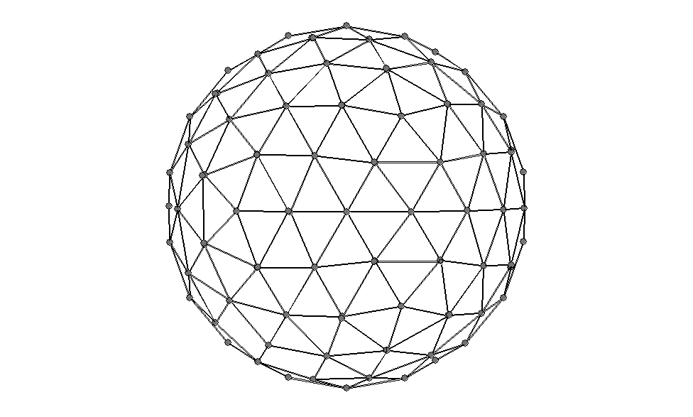

Print out details of the COSMO surface to a file called <file>.cos. Quantities printed include the solvent accessible surface area, per atom, and the segment that make up the SAS.
In addition to the heat of formation, other solvent-related properties are printed. Among these are the TOTAL COSMO CHARGE; this is the total COSMO polarization charge on the surface of the solute, i.e., it is approximately equal to the negative of the total solute charge. For detailed information, see p.140 of "COSMO-RS: From Quantum Chemistry to Fluid Phase Thermodynamics and Drug Design", by Andreas Klamt, COSMOlogic GmbH&CoKG, Leverkusen, Germany. Publisher: Elsevier, 2005
The points on the SAS are printed; these can then be used with a graphics package to give a pictorial representation of the SAS.
As an example, when NSPA=122 is used with a single atom, the set of points represented by the following picture is generated:

For a sigma profile, corrections to the bond dipole and quadrupole can be supplied by COSCCH.